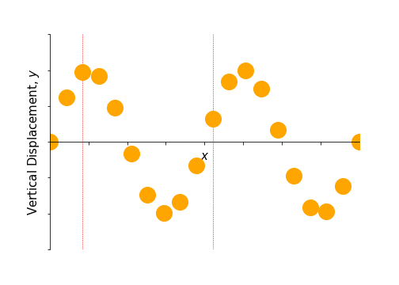
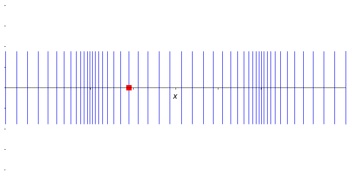
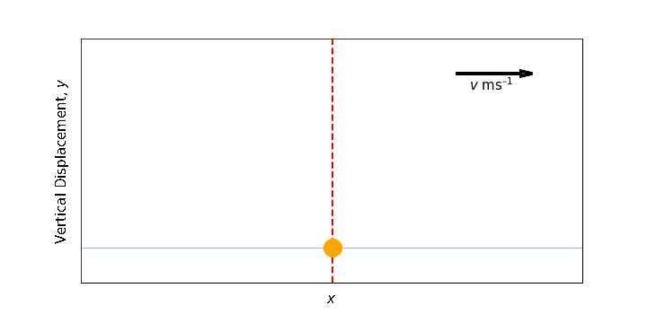
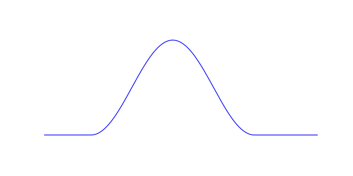
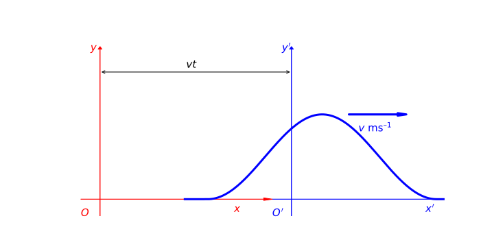
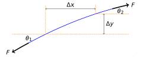
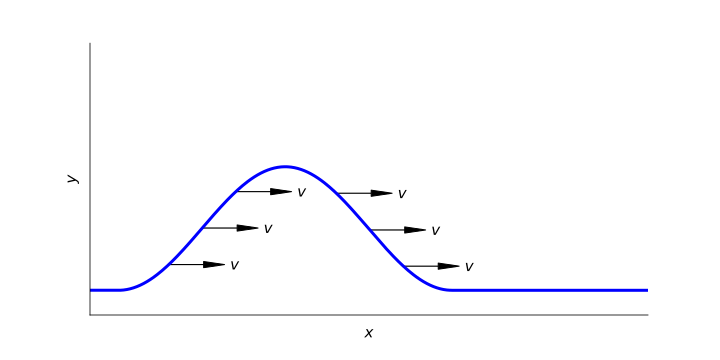

7 Simple wave motion and the Wave Equation
Textbook link: Tipler and Mosca, Section 15.1
A wave is a means by which energy and momentum are carried through space, without transporting matter. When we consider a medium which carries a wave, the particles of that material oscillate about a mean position, but have an average displacement of zero; i.e. they always return to their starting position. A wave can be of any shape - there is no requirement for a wave to be sinusoidal, though this is the simplest shape which we can consider mathematically.
We also consider waves to be either transverse; where the displacement of the medium is perpendicular to the direction of wave propagation (e.g. a wave travelling along a string), or they can be longitudinal; where the displacement of the medium is parallel to the direction of propagation (e.g. a sound wave passing through air).

A note on transverse waves
In contrast with longitudinal waves, the medium carrying a transverse wave is displaced perpendicular to the direction of travel. This gives rise to the phenomenon of polarisation. A plane of polarisation is defined as a plane containing the displacement direction and the direction of propagation. For any given transverse wave, two orthogonal independent polarisations are possible. All other polarisations may be constructed from weighted combinations of these two basic polarisations. For electromagnetic waves, it is the electric field vector which defines the plane of polarisation in combination with the direction of propagation. We will revisit these properties of transverse waves as we go through our discussion.
7.1 Wave pulses
Where a wave is a sustained periodic disturbance which propagates energy through a medium, a wave pulse in contrast is any localised non-periodic disturbance propagating an energy pulse through the medium. A typical pulse is shown in Figure 7.3.

We illustrate a pulse graphically as any function defined as \(y = f(x)\), where the \(+x\) direction is the direction of propagation of the pulse. If the pulse propagates without changing shape, it becomes convenient to consider a moving reference frame within which the pulse is stationary; i.e. rather than imagining the pulse moving to the right along fixed axes, we keep the pulse stationary in our view and move the axes to the left.
In the moving frame then, the pulse is described as \(y^\prime = f(x^\prime)\) for all times, because the pulse does not change its shape.
We can inter convert between the two frames of reference by the relation:
\[ x = x^\prime + vt \tag{7.1}\]
…where \(v\) is the velocity of the pulse. This allows us to convert the position in the moving reference frame, \(x^\prime\), back to the position in the fixed reference frame by adding the distance \(vt\).


If the shape of the pulse in the moving frame is defined as \(y^\prime = f(x^\prime)\) we can use Equation 7.1 to find the shape of the pulse in the static frame, \(y\):
\[ \begin{array}{rcl} y &=& f(x^\prime)\\ &=& f(x - vt) \end{array} \tag{7.2}\]
The relation described in Equation 7.2 describes a wave moving to the RIGHT; for a pulse moving to the left, \(v\) becomes negative, and hence:
\[ y = f(x + vt) \]
The function \(y = f(x \pm vt)\) is known as the wave function; it describes the displacement of the medium, whether the transverse displacement of a string or the longitudinal displacement of air molecules in a sound wave.1.
The wave function is a solution of the wave equation (Equation 7.3):2
\[ \frac{\partial^2 y}{\partial x^2} = \frac{1}{v^2} \frac{\partial^2 y}{\partial t^2} \tag{7.3}\]
Any function in the form \(y = f(x \pm vt)\) is a solution of this wave equation; i.e. the wave equation describes the uniform propagation of any displacement, provided it does not change shape as it travels. There are numerous examples of such functions, including:
- \(y = \exp(x-vt)^2\)
- \(y = \frac{\sin(x-vt)}{x-vt}\)
- \(y = \cos (x+vt)\)
7.2 Deriving the wave equation
To better understand the wave equation, it is useful to know its derivation. To do this, we shall first consider a segment of string from a curved part of a wave pulse (Figure 7.6):

The length of this segment is \(\approx \Delta x\) (for small angles), and the mass of this segment of string \(m = \mu \Delta x\) (where \(\mu\) is the mass per unit length). As we are considering a transverse wave, this segment of string will move vertically, and all forces acting on the segment arise from the tension force within the string. We can determine these forces by resolving the horizontal and vertical components of this force \(F\) using the parameters laid out in Figure 7.6.
By considering the net vertical force acting on this segment:
\[ \begin{array}{rcll} \sum F &=& F \sin \theta_2 - F \sin \theta_1 &\\ &=& F \left( \tan \theta_2 - \tan \theta_1 \right) & \textsf{for small angles} \end{array} \tag{7.4}\]
We can also determine an expression for the slope, \(S\), of the segment of string at a given point:
\[ S = \tan \theta = \frac{\partial y}{\partial x} \tag{7.5}\]
This means we can now express the overall force acting on the segment in terms of the slope of the segment at its start and end points (assuming small angles!) by combining Equation 7.4 and Equation 7.5 :
\[ \sum F = F(S_2 - S_1) = F \Delta S \tag{7.6}\]
The quantity \(F\Delta S\) in Equation 7.6 is the net force acting on the segment; so we can now apply Newton’s second law:
\[ F\Delta S = m a = \mu \Delta x \frac{\partial^2 y}{\partial t^2} \tag{7.7}\]
…or, to rearrange:
\[ \frac{\Delta S}{\Delta x} = \frac{\mu}{F} \frac{\partial^2 y}{\partial t^2} \tag{7.8}\]
Since the slope \(S\) of the segment is the ‘rate of change of \(y\) with respect to \(x\)’ (Equation 7.5), we can redefine the term in Equation 7.7; in the limit, as \(\Delta x \rightarrow 0\):
\[ \frac{\Delta S}{\Delta x} \approx \frac{\partial S}{\partial x} = \frac{\partial}{\partial x} \left( \frac{\partial y}{\partial x} \right) = \frac{\partial^2 y}{\partial x^2} \tag{7.9}\]
Finally, by combining this result in Equation 7.9 with the result in Equation 7.8), we obtain the wave equation for a stretched string (Equation 7.10):
\[ \frac{\partial^2 y}{\partial x^2} = \frac{\mu}{F} \frac{\partial^2 y}{\partial t^2} \tag{7.10}\]
As we mentioned in Section 7.1, any function of the form \(y = f(x \pm vt)\) will be a solution to the wave Equation 7.10. In the case of the string, the solution will solve the wave equation provided that \(v^2 = \frac{F}{\mu}\).
7.3 The wave equation - proof by substitution
In this section, we will show the proof of the wave equation which we determined graphically in Section 7.2. Here we will use partial differentiation, explaining the \(\partial\) notation we have already seen in this work.3
Let’s work through this step by step:
- Consider the general function \(y = \cos(x - vt)\). Differentiate this first with respect to \(x\):
\[ \frac{\partial y}{\partial x} = -\sin(x - vt) \]
The second derivative therefore becomes:
\[ \frac{\partial^2 y}{\partial x^2} = -\cos(x - vt) \tag{7.11}\]
- Now we differentiate with respect to time \(t\):
\[ \frac{\partial y}{\partial t} = v\sin(x - vt) \]
… and find the second derivative:
\[ \frac{\partial^2 y}{\partial t^2} = -v^2 \cos(x - vt) \tag{7.12}\]
- We can now combine Equation 7.11 and Equation 7.12 to eliminate the term \(\cos(x - vt)\), we obtain the wave equation as required:
\[ \frac{\partial^2 y}{\partial x^2} = \frac{1}{v^2} \frac{\partial^2 y}{\partial t^2} \tag{7.13}\]
Through unpacking of Equation 7.13 we can uncover how it might be adapted to obtain wave equations for other systems. The term \(x\) represents the direction of propagation of the wave, while \(y\) represents the disturbance of the particle carrying the wave (in the case of a transverse wave, this is perpendicular to the direction of propagation).
For longitudinal sound waves, Equation 7.13 becomes:
\[ \frac{\partial^2 s}{\partial x^2} = \frac{1}{v_s^2} \frac{\partial^2 s}{\partial t^2} \tag{7.14}\]
In this example, \(s\) is the displacement of molecules of the medium parallel to the direction of the propagation, while \(v_s\) is the velocity of sound in the medium.
For electromagnetic waves, Equation 7.13 becomes either:
\[ \frac{\partial^2 E_z}{\partial x^2} = \frac{1}{c^2} \frac{\partial^2 E_z}{\partial t^2} \tag{7.15}\]
…or
\[ \frac{\partial^2 B_y}{\partial x^2} = \frac{1}{c^2} \frac{\partial^2 B_y}{\partial t^2} \tag{7.16}\]
…where \(E_z\) and \(B_y\) are the transverse components of the electric and magnetic field vectors (we will discuss this further later), and \(c\) is the speed of light.
Note: The speed of propagation cannot be deduced from the wave equation, instead it must be obtained from a model of the system concerned.
7.4 The Phase Velocity - the velocity of waves
We define the phase velocity as the speed of propagation of any particular point on a wave. Since the wave propagates without changing shape, it does not matter which point we pick.
The phase velocity will depend on a combination of the elastic and inertial terms.

For waves travelling on a string the phase velocity can be found from the tension in the string (\(F\)) and the linear mass density (mass per unit length) of the string (\(\mu\)):
\[ v = \sqrt{\frac{F}{\mu}} \]
This has parallels for sound waves in a fluid, with phase velocity found from the bulk modulus \(B\) (a factor describing the fluid’s resistance to compression) and the equilibrium density \(\rho\) of the fluid:
\[ v_s = \sqrt{\frac{B}{\rho}} \]
We can go further to look at the propagation of sound waves in an isotropic solid (solid of constant composition) - however we can only use this to consider a thin section, not a bulk solid (this is an acceptable model for considering earth tremors in the Earth’s crust). This time the phase velocity depends on the density of the solid \(\rho\) and either the Young’s modulus (\(Y\), for longitudinal P waves) or the shear modulus (\(G\), for transverse S waves):
\[ v_s = \sqrt{\frac{Y}{\rho}} \textrm{or} \sqrt{\frac{G}{\rho}} \]
These equations describe how wave phase velocities can be determined in solids and liquids; in a gas, we need to use other parameters, however the core relationship is still familiar:
\[ v_s = \sqrt{\frac{\gamma RT}{M}} = \sqrt{\frac{\gamma k_{\mathrm{B}}T}{m}} \]
Here, the terms \(R\), \(T\) and \(M\) refer to the gas constant (units J K-1 mol-1), absolute temperature (units K) and the molar mass of the gas (units kg mol-1) respectively4, while \(k_{\textrm{B}}\) and \(m\) refer to the Boltzmann constant (units J K-1) and the mass of an individual gas molecule (units kg).
Finally, we can obtain a similar expression for the phase velocity of light waves:
\[ c = \sqrt{\frac{1}{\mu_0 \epsilon_0}} \]
…where \(\mu_0\) and \(\epsilon_0\) are the permeability of free space and the permittivity of free space respectively.
7.5 Simple wave summary
In this chapter, we have introduced the principle of waves and the wave equation. Waves carry energy and momentum through space by localised organised oscillations without net transport of matter. They can be transverse (oscillation perpendicular to direction of propagation) or longitudinal (oscillation parallel to direction of propagation), or can have a more complex displacement pattern. Waves do not have to be sinusoidal, and can have any shape.
Any travelling wave can be described by the function in the form of \(y = f(x \pm vt)\) which satisfies the wave equation, relating the displacement of the medium (\(y\)) to the position of the wave (\(x\)) and the phase velocity (\(v\)).
\[ \frac{\partial^2 y}{\partial x^2} = \frac{1}{v^2} \frac{\partial^2 y}{\partial t^2} \]
Remember that the phase velocity cannot be predicted from the wave equation, but depends on the physics of the system. It generally results from a consideration of the elastic and inertial properties of the system. For waves on a string, \(v = \sqrt{\frac{F}{\mu}}\), where \(F\) is the tension in the string and \(\mu\) is the mass per unit length (linear mass density).
It may seem counter intuitive that, for a wave moving with positive \(v\)in the \(+x\) direction, we subtract \(vt\); but try thinking this way: after time \(t\), the wave will have advanced further to the right. If, after one second, the shape of the wave has its peak at \(x_a\), after three seconds, the peak will have advanced to \(x_b = x_a + vt\); however, the value of the wavefunction at \(x_a\) at this new time (\(x_a^\prime\)) will have come from the value of the wavefunction three seconds earlier, to the left of the point; i.e. \(x_a^\prime = x_a - vt\)↩︎
The \(\partial\) symbol refers to partial differentiation.↩︎
Partial differentiation is needed when we have multivariate expressions. We can only differentiate one variable at a time, so partial differentiation indicates that we are holding all other variables constant. In our wave equations, we have position and time variables, so when differentiating \(x\) with respect to \(y\), we are holding the time \(t\) constant.↩︎
Note that the molar mass is expressed in kg mol-1 here, rather than the more common g mol-1 ; the reason for this is to ensure continuity and present everything in SI units.↩︎